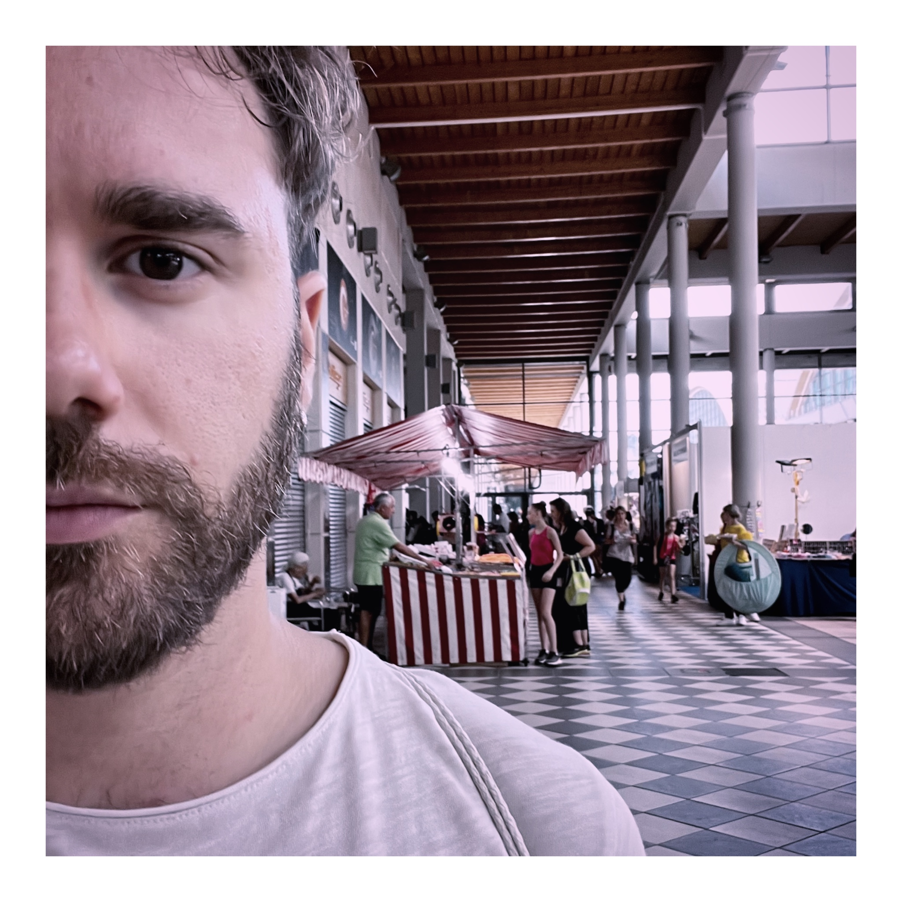

Perché Funziona?
Non solo gioco, ma una vera e propria metodologia didattica.
Compiti Autentici
Sfide basate su scenari reali che danno significato all'apprendimento.
Simulazioni di Realtà
Immedesimazione profonda per comprendere dinamiche complesse vivendole.
Attività Cooperative
Team building educativo: si vince e si impara supportandosi a vicenda.
La Mia Filosofia
Didattica Inclusiva
Ogni gioco è progettato con l'idea che tutti possano partecipare da protagonisti, valorizzando punti di forza diversi.
Attenzione ai Bisogni
L'accessibilità e il rispetto delle tempistiche di ciascuno non sono un'aggiunta, ma il punto di partenza del game design.
Ambiente Positivo
Sbagliare nel gioco è sicuro e formativo. Creiamo un clima in classe dove l'errore è un gradino, non un capolinea.
Gli Strumenti
Un supporto concreto e modulabile per portare i giochi nella tua classe domani stesso, rispettando i tempi di ogni studente.
-
Schede stampabili
Materiale pronto all'uso, impaginato per una stampa economica e chiara, pensato per non appesantire il carico cognitivo.
-
Carte divise per livello
Adatta la sfida alla tua classe con mazzi di difficoltà scalabile, permettendo a tutti di partecipare attivamente.
-
Supporto digitale continuo
Un ponte tra carta e terminale per risorse, approfondimenti e soluzioni sempre aggiornate a portata di click.
Chi Sono
Insegno Italiano, Storia e Geografia nella scuola secondaria di primo grado con la missione di rendere l'apprendimento un'esperienza efficace, inclusiva e dinamica per ogni studente.
Sviluppo giochi didattici pensati per accendere la curiosità in classe e costruire un clima di collaborazione e positività.
Sono affascinato dal digitale e dall’intelligenza artificiale, che scelgo come potenti alleati per rifinire e innovare il mio metodo d'insegnamento. Il mio obiettivo è trasformare ogni lezione in un viaggio coinvolgente, caldo e alla portata di tutti.
